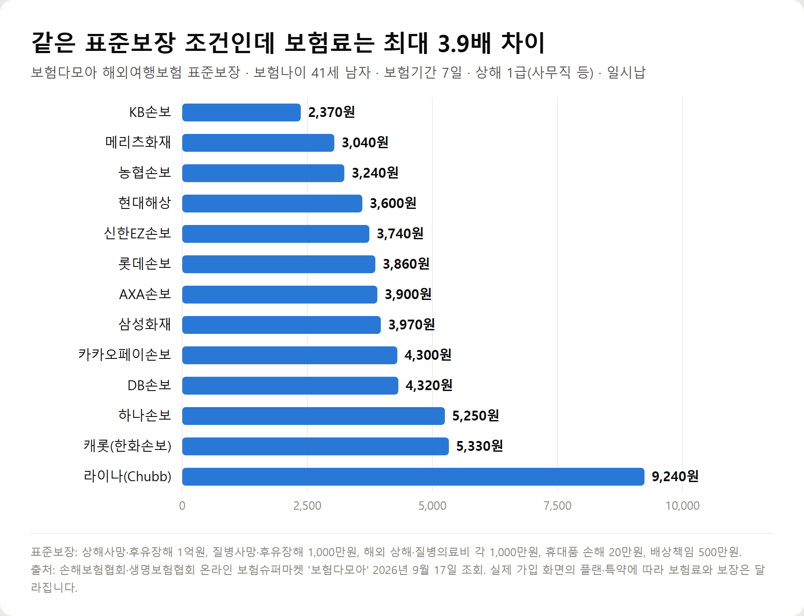
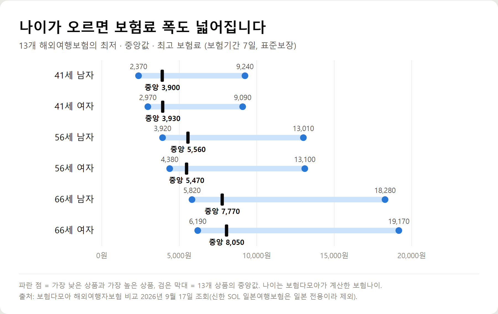
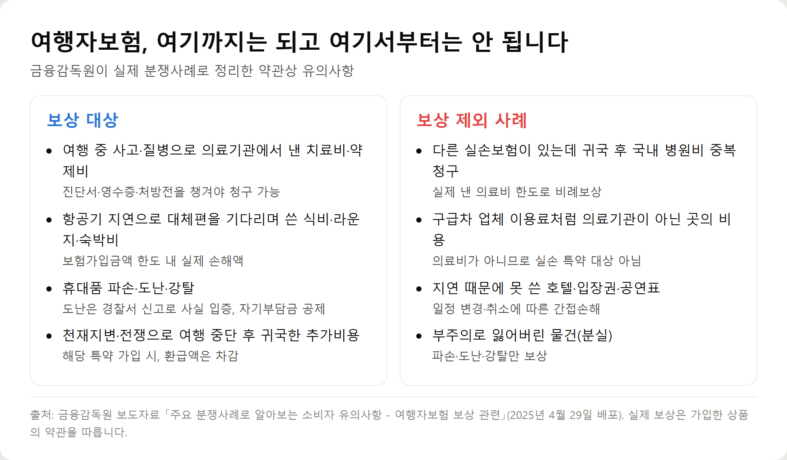
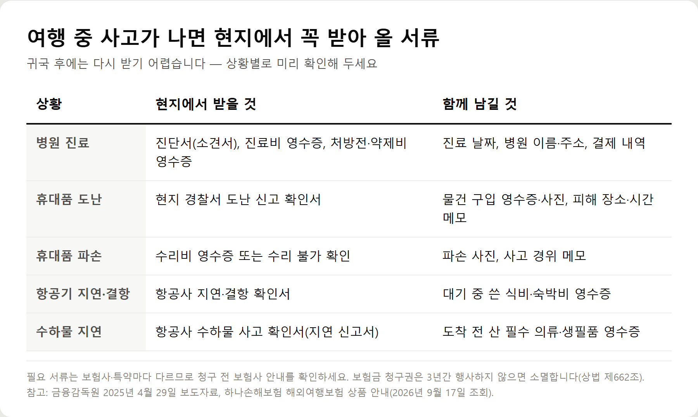

<meta charset="utf-8">
<title>해외여행자보험 꼭 가입해야 할까? 보험료 비교·보상 안 되는 경우 — 나의 투자 그리고 행복한 여행</title>
<meta name="description" content="해외여행자보험 보장내용과 보험사 13곳 보험료(41·56·66세)를 보험다모아 2026년 9월 조회값으로 비교하고, 금융감독원 분쟁사례로 보상 안 되는 경우와 청구 서류를 정리했습니다.">
<meta name="viewport" content="width=device-width, initial-scale=1">
<link rel="canonical" href="https://worldtraveler1.tistory.com/83">
<link rel="preconnect" href="https://fonts.googleapis.com">
<link rel="preconnect" href="https://fonts.gstatic.com" crossorigin>
<link rel="stylesheet" href="https://fonts.googleapis.com/css2?family=Hahmlet:wght@400;600;800&family=IBM+Plex+Mono:wght@400;500&family=IBM+Plex+Sans+KR:wght@300;400;500;600&display=swap">

<style>
  :root{
    --paper:#F2EEE6;--surface:#FAF8F3;--surface-2:#E7E1D5;
    --ink:#191510;--ink-2:#4A4235;--ink-3:#7D7364;
    --line:#D6CEBF;--line-soft:#E4DDD0;--accent:#B06A15;--accent-bright:#C2761A;
    --up:#E5484D;--down:#3B82F6;
    --f-display:"Hahmlet",'Nanum Myeongjo',"Apple SD Gothic Neo",serif;
    --f-body:"IBM Plex Sans KR","Apple SD Gothic Neo","Malgun Gothic",sans-serif;
    --f-mono:"IBM Plex Mono","SFMono-Regular",Consolas,monospace;
    --pad:clamp(20px,5vw,64px);
  }
  @media (prefers-color-scheme:dark){
    :root:not([data-theme="light"]){
      --paper:#0B1120;--surface:#121A2C;--surface-2:#1A2439;
      --ink:#E9EEF7;--ink-2:#A9B5C9;--ink-3:#72809A;
      --line:#26314A;--line-soft:#1D2739;--accent:#E8A33D;--accent-bright:#F0B45C;
    }
  }
  *{box-sizing:border-box;}
  body{margin:0;background:var(--paper);color:var(--ink);font-family:var(--f-body);
    font-weight:300;font-size:1rem;line-height:1.75;-webkit-font-smoothing:antialiased;}
  a{color:inherit;}
  img{max-width:100%;height:auto;}
  .wrap{max-width:760px;margin:0 auto;padding-inline:var(--pad);}
  .nav{position:sticky;top:0;z-index:20;background:color-mix(in srgb,var(--paper) 88%,transparent);
    backdrop-filter:saturate(180%) blur(12px);border-bottom:1px solid var(--line);}
  .nav-in{display:flex;align-items:center;justify-content:space-between;height:58px;}
  .brand{font-family:var(--f-display);font-weight:600;font-size:1rem;letter-spacing:-.02em;text-decoration:none;}
  .back{font-family:var(--f-mono);font-size:.72rem;color:var(--ink-3);text-decoration:none;}
  .article{padding-block:clamp(40px,7vw,72px) clamp(56px,9vw,96px);}
  .eyebrow{font-family:var(--f-mono);font-size:.68rem;letter-spacing:.16em;text-transform:uppercase;
    color:var(--accent);margin:0 0 14px;}
  h1{font-family:var(--f-display);font-weight:800;font-size:clamp(1.6rem,4.4vw,2.3rem);
    line-height:1.3;letter-spacing:-.03em;margin:0 0 16px;}
  .byline{font-family:var(--f-mono);font-size:.72rem;color:var(--ink-3);
    padding-bottom:24px;border-bottom:1px solid var(--line);margin-bottom:32px;}
  h2{font-family:var(--f-display);font-weight:600;font-size:1.25rem;letter-spacing:-.02em;margin:42px 0 14px;}
  h3{font-family:var(--f-display);font-weight:600;font-size:1.05rem;letter-spacing:-.02em;
    margin:30px 0 10px;padding-top:14px;border-top:1px solid var(--line-soft);}
  h3 .code{font-family:var(--f-mono);font-size:.7rem;font-weight:400;color:var(--ink-3);margin-left:6px;}
  p{margin:0 0 18px;color:var(--ink-2);}
  ul.checks{margin:0 0 18px;padding-left:20px;color:var(--ink-2);}
  ul.checks li{margin-bottom:8px;font-size:.94rem;}
  table{width:100%;border-collapse:collapse;font-size:.88rem;margin-bottom:8px;}
  th{font-family:var(--f-mono);font-size:.66rem;letter-spacing:.06em;text-transform:uppercase;
    color:var(--ink-3);text-align:right;padding:8px 6px;border-bottom:1px solid var(--line);}
  th:first-child{text-align:left;}
  td{padding:10px 6px;border-bottom:1px solid var(--line-soft);color:var(--ink-2);}
  td.num{font-family:var(--f-mono);text-align:right;font-variant-numeric:tabular-nums;}
  td.up{color:var(--up);} td.down{color:var(--down);}
  .scroll{overflow-x:auto;}
  figure{margin:22px 0;}
  figure img{display:block;border-radius:3px;background:var(--surface-2);}
  figcaption{margin-top:8px;font-family:var(--f-mono);font-size:.68rem;color:var(--ink-3);text-align:center;}
  .note{margin-top:34px;padding:16px 18px;border-left:3px solid var(--accent);
    background:var(--surface);border-radius:0 3px 3px 0;}
  .note p{margin:0;font-size:.85rem;color:var(--ink-3);}
  .foot{border-top:1px solid var(--line);background:var(--surface);padding-block:30px 38px;}
  .foot p{margin:0;font-size:.8rem;color:var(--ink-3);}
</style>

<nav class="nav">
  <div class="wrap nav-in">
    <a class="brand" href="../index.html">나의 투자 그리고 행복한 여행</a>
    <a class="back" href="../index.html#stocks">← 시황으로</a>
  </div>
</nav>

<main class="wrap article">
  <p class="eyebrow">Market</p>
  <h1>해외여행보험 가이드 — 보장 항목·연령별 보험료·보상 제외·청구 서류 (2026)</h1>
  <p class="byline">여행 · 2026-09-17 기준</p>

  <p><b>이 포스팅은 네이버 쇼핑 커넥트 활동의 일환으로, 판매 발생 시 수수료를 제공받습니다.</b></p>
  <p><b>이 포스팅은 쿠팡 파트너스 활동의 일환으로, 구매 시 수수료를 제공받습니다.</b></p>
  <p>한 줄 요약: 표준보장 7일 해외여행보험은 41세 남자 2,370원~9,240원, 66세 남자 5,820원~18,280원이고, 분실·일정 취소 손해·실손과 겹치는 국내 의료비는 보상되지 않습니다.</p>
  <p>보험료는 보험다모아(손해·생명보험협회) 비교 공시, 보상 기준은 금융감독원 분쟁사례와 외교부·법제처 안내를 기준으로 2026년 9월 17일에 확인했습니다.</p>
  <h2>여행자보험은 꼭 가입해야 할까 — 판단 기준 8가지</h2>
  <p>법으로 정해진 의무 보험은 아닙니다. 외교부는 해외 체류 중 현지 치료나 입원, 국내 이송이 필요한 상황에 대비해 <b>출국 전 여행자보험(장기라면 장기체류보험) 가입을 권장</b>합니다.</p>
  <p>가입 여부를 대신 정해 드릴 수는 없지만, 아래 항목 중 해당하는 게 많을수록 보험이 없을 때 떠안는 비용이 커집니다.</p>
  <ul class="checks">
    <li>여행 기간 — 길수록 아프거나 다칠 확률이 쌓입니다</li>
    <li>여행 지역 — 외국인 여행자는 현지 건강보험 적용을 받지 못하는 게 보통이라 진료비를 본인이 먼저 냅니다</li>
    <li>나이와 건강 상태 — 지병이 있거나 60대 이상이면 현지 진료 가능성을 더 높게 잡아야 합니다</li>
    <li>여행 목적 — 스킨스쿠버·스키·등반 같은 활동은 보장 제외나 인수 제한이 붙기 쉽습니다</li>
    <li>휴대품 — 카메라·휴대폰·노트북을 들고 가는지</li>
    <li>항공편 — 경유가 많거나 결항이 잦은 계절·노선인지</li>
    <li>이미 가진 보험 — 국내 실손보험, 카드사 부가 여행자보험 등</li>
    <li>위험 감수 성향 — 수천 원을 아끼는 대신 큰 병원비를 직접 감당할 수 있는지</li>
  </ul>
  <div class="note"><p>핵심은 이것입니다. 여행자보험의 보험료는 대체로 커피 한두 잔 값이지만, 막아 주는 건 해외 병원비처럼 금액을 미리 알 수 없는 비용입니다.</p></div>
  <h2>해외여행자보험 보장내용 — 핵심 7가지 한눈에</h2>
  <p>상품마다 이름은 조금씩 달라도 뼈대는 비슷합니다. 기본 계약에 몇 가지 담보가 들어 있고, 나머지는 특약으로 골라 넣는 구조입니다.</p>
  <div style="overflow-x:auto"><table border="1" cellpadding="6" style="border-collapse:collapse;width:100%;font-size:14px;line-height:1.5"><thead><tr><th style="background:#f3f5f8">보장 항목</th><th style="background:#f3f5f8">무엇을 보장하나</th><th style="background:#f3f5f8">가입 전 확인할 것</th></tr></thead><tbody><tr><td>해외 의료비(상해·질병)</td><td>여행 중 다치거나 아파서 해외 의료기관에서 낸 치료비·약제비</td><td>보장 한도, 의료기관이 아닌 곳의 비용(구급차 업체 등)은 제외</td></tr><tr><td>국내 의료비</td><td>여행 중 생긴 상해·질병을 귀국 후 국내 병원에서 치료한 비용</td><td>다른 실손보험이 있으면 중복보상 안 됨</td></tr><tr><td>휴대품 손해</td><td>휴대품의 파손·도난·강탈</td><td>분실 제외, 물품당 한도, 자기부담금, 현금·신용카드·항공권 제외</td></tr><tr><td>배상책임</td><td>여행 중 실수로 남을 다치게 하거나 물건을 망가뜨린 손해</td><td>보상 한도, 제외되는 상황</td></tr><tr><td>항공기 지연·결항</td><td>대체편을 기다리며 쓴 식비·숙박비 등 체류비</td><td>지연 시간 요건, 실손형인지 정액형인지</td></tr><tr><td>수하물 지연</td><td>짐이 늦게 도착해 산 필수 의류·생필품</td><td>몇 시간 이상 지연부터인지(예: 6시간)</td></tr><tr><td>사망·후유장해</td><td>여행 중 사고·질병으로 인한 사망·장해</td><td>상해와 질병의 가입금액 차이</td></tr></tbody></table></div>
  <p>외교부가 안내한 손해보험사 특약 예시에는 이 밖에도 중대사고 구조송환비용, 여권 분실 재발급 비용, 특정감염병 보상금, 해외 비급여 실손의료비, 여행 중 자택 도난손해 등이 있습니다. <b>같은 '해외여행보험'이라도 어떤 특약이 들어갔는지에 따라 보장이 크게 달라집니다.</b></p>
  <h2>여행자보험 가격은 얼마? 2026년 9월 보험사별 보험료 비교</h2>
  <figure><figcaption>해외여행보험 7일 보험료 비교 — 보험다모아 표준보장, 보험나이 41세 남자, 13개 상품, 2026년 9월 17일 조회</figcaption></figure>
  <p>손해보험협회·생명보험협회가 운영하는 <b>보험다모아</b>는 보험사들이 같은 표준보장 조건으로 계산한 보험료를 한 화면에 보여 줍니다. 조건은 상해사망·후유장해 1억원, 질병사망·후유장해 1,000만원, 해외 상해·질병의료비 각 1,000만원, 휴대품 손해 20만원, 배상책임 500만원, 보험기간 7일, 상해 1급(사무직 등), 일시납입니다.</p>
  <p>이 조건에서 41세 남자의 보험료는 가장 낮은 상품 2,370원, 가장 높은 상품 9,240원로 약 3.9배 차이가 났습니다. 13개 상품의 중앙값은 3,900원입니다.</p>
  <div style="overflow-x:auto"><table border="1" cellpadding="6" style="border-collapse:collapse;width:100%;font-size:14px;line-height:1.5"><thead><tr><th style="background:#f3f5f8">보험사</th><th style="background:#f3f5f8">41세 남</th><th style="background:#f3f5f8">41세 여</th><th style="background:#f3f5f8">56세 남</th><th style="background:#f3f5f8">56세 여</th><th style="background:#f3f5f8">66세 남</th><th style="background:#f3f5f8">66세 여</th><th style="background:#f3f5f8">가입연령</th></tr></thead><tbody><tr><td>KB손보</td><td>2,370원</td><td>2,970원</td><td>3,920원</td><td>4,680원</td><td>5,980원</td><td>7,750원</td><td>19~79세</td></tr><tr><td>메리츠화재</td><td>3,040원</td><td>3,030원</td><td>5,230원</td><td>5,080원</td><td>8,050원</td><td>7,910원</td><td>20~80세</td></tr><tr><td>농협손보</td><td>3,240원</td><td>3,240원</td><td>4,370원</td><td>4,380원</td><td>5,820원</td><td>6,190원</td><td>15~80세</td></tr><tr><td>현대해상</td><td>3,600원</td><td>3,700원</td><td>5,200원</td><td>5,400원</td><td>7,400원</td><td>8,200원</td><td>19~80세</td></tr><tr><td>신한EZ손보</td><td>3,740원</td><td>3,730원</td><td>4,940원</td><td>4,950원</td><td>6,490원</td><td>6,890원</td><td>19~79세</td></tr><tr><td>롯데손보</td><td>3,860원</td><td>3,900원</td><td>5,560원</td><td>5,430원</td><td>7,770원</td><td>8,050원</td><td>16~79세</td></tr><tr><td>AXA손보</td><td>3,900원</td><td>3,930원</td><td>5,430원</td><td>5,470원</td><td>7,400원</td><td>7,940원</td><td>19~79세</td></tr><tr><td>삼성화재</td><td>3,970원</td><td>4,360원</td><td>6,250원</td><td>7,240원</td><td>9,180원</td><td>11,220원</td><td>0~79세</td></tr><tr><td>카카오페이손보</td><td>4,300원</td><td>4,290원</td><td>5,670원</td><td>5,690원</td><td>7,440원</td><td>7,910원</td><td>19~79세</td></tr><tr><td>DB손보</td><td>4,320원</td><td>4,370원</td><td>6,580원</td><td>6,600원</td><td>9,520원</td><td>9,610원</td><td>19~79세</td></tr><tr><td>하나손보</td><td>5,250원</td><td>5,250원</td><td>6,720원</td><td>6,740원</td><td>8,620원</td><td>9,110원</td><td>0~79세</td></tr><tr><td>캐롯(한화손보)</td><td>5,330원</td><td>5,320원</td><td>7,090원</td><td>7,120원</td><td>9,390원</td><td>9,990원</td><td>19~79세</td></tr><tr><td>라이나(Chubb)</td><td>9,240원</td><td>9,090원</td><td>13,010원</td><td>13,100원</td><td>18,280원</td><td>19,170원</td><td>19~79세</td></tr></tbody></table></div>
  <p>표의 나이는 보험다모아가 생년월일로 계산한 보험나이입니다. 신한EZ손보는 '처음해외여행보험' 기준이며, 같은 보험료로 조회된 일본 전용 상품은 표에서 뺐습니다. 보험료는 조회일과 상품 개정에 따라 바뀝니다.</p>
  <p>표를 볼 때 주의할 점이 있습니다. <b>이 금액은 비교를 위한 표준보장 기준</b>이라, 실제 가입 화면의 플랜(예: 실속형·표준형·고급형)이나 특약을 고르면 보험료와 보장이 달라집니다. 가장 싼 상품이 내 여행에 가장 맞는 상품이라는 뜻도 아닙니다.</p>
  <h2>여행자보험 가격이 달라지는 이유 — 나이·기간·특약</h2>
  <figure><figcaption>나이·성별별 해외여행보험 7일 보험료 최저·중앙값·최고 — 보험다모아 13개 상품, 2026년 9월 17일 조회</figcaption></figure>
  <p>나이가 가장 크게 움직입니다. 13개 상품의 중앙값은 41세 남자 3,900원, 56세 남자 5,560원, 66세 남자 7,770원로 올라갔습니다. 66세 여자는 6,190원~19,170원로 상품 간 차이도 더 벌어졌습니다.</p>
  <p>성별 차이는 상품마다 방향이 달라 한쪽이 늘 비싸다고 보기 어렵습니다. 그 밖에 보험료를 바꾸는 요소는 다음과 같습니다.</p>
  <ul class="checks">
    <li>여행 기간 — 보험기간이 길어질수록 올라갑니다</li>
    <li>여행 지역·목적 — 위험도가 높은 지역이나 활동은 인수가 거절되거나 가입금액이 제한될 수 있습니다</li>
    <li>가입금액 — 해외 의료비 한도를 높이면 보험료도 오릅니다</li>
    <li>특약 — 항공기 지연, 여권 분실, 중단사고 추가비용 등을 더할수록 올라갑니다</li>
    <li>보험사와 가입 경로 — 다이렉트(온라인) 상품끼리도 위 표처럼 차이가 납니다</li>
    <li>할인 조건 — 예를 들어 캐롯 해외여행보험은 보험다모아 비고란에 '얼리버드(7일 이전 가입) 할인, 동반인 가입 할인'을 적어 두었습니다</li>
  </ul>
  <p><b>보험료를 합리적으로 줄이는 방법 하나.</b> 이미 국내 실손보험이 있다면 여행자보험의 '국내 의료비' 담보는 넣어도 중복으로 받지 못합니다. 금융감독원도 이 경우 추가 가입이 불필요할 수 있다고 안내합니다. 해외 의료비는 국내 실손으로 보장되지 않는 것이 원칙이니 이쪽은 빼지 마세요.</p>
  <h2>여행자보험 보상 안 되는 경우 — 금융감독원 분쟁사례 6가지</h2>
  <figure><figcaption>여행자보험 보상 대상과 보상 제외 사례 — 금융감독원 2025년 4월 29일 분쟁사례 보도자료 기준</figcaption></figure>
  <p>금융감독원이 2025년 4월 29일 배포한 보도자료에는 실제 민원 사례가 실려 있습니다. 가입 전에 읽어 두면 보험금을 기대했다가 실망하는 일을 크게 줄일 수 있습니다.</p>
  <p><b>① 국내 의료비는 다른 실손보험과 중복되지 않습니다.</b> 베트남 여행 중 발가락이 골절돼 귀국 후 국내에서 수술을 받은 사례에서, 보험사는 다른 실손보험이 있다는 이유로 비례보상 원칙을 적용해 의료비 일부만 지급했습니다.</p>
  <p><b>② 의료기관에서 낸 치료비·약제비만 보상합니다.</b> 여행 중 알레르기 반응으로 구급차 업체를 이용해 약 80만원을 청구받은 사례는 '의료기관에서 발생한 의료비가 아니다'라는 이유로 보상 대상이 아니었습니다.</p>
  <p><b>③ 항공기 지연 체류비는 보상합니다.</b> 지연·대체 항공편을 기다리며 쓴 식음료비, 라운지 이용료, 숙박비 등을 보험가입금액 한도(예: 30만원)에서 실제 손해만큼 줍니다. 다만 폭설로 출발이 다음 날로 밀려 집에 돌아가며 마트에서 산 세제·휴지 같은 생활용품은 거절됐습니다.</p>
  <p><b>④ 일정 변경·취소로 생긴 간접손해는 보상하지 않습니다.</b> 홍콩 경유 런던행 항공편이 연착돼 예약해 둔 호텔을 환불받지 못한 사례가 대표적입니다. 현지 숙박비, 관광지 입장료, 공연 관람료 같은 손해는 대상이 아닙니다.</p>
  <p><b>⑤ 휴대품은 파손·도난·강탈만 보상하고 분실은 보상하지 않습니다.</b> 착용하던 선글라스를 잃어버린 건 거절, 같은 여행에서 파손된 카메라는 자기부담금을 뺀 수리비가 지급됐습니다. 도난이라면 경찰서 신고로 도난 사실을 입증해야 합니다.</p>
  <p><b>⑥ 천재지변으로 여행을 중단하고 귀국한 추가비용은 보상합니다(해당 특약 가입 시).</b> 튀르키예 여행 중 지진으로 급히 귀국한 사례에서 원래 귀국 항공권과 새로 산 항공권의 차액이 지급됐습니다. 대체 일정을 소화했거나 추가비용이 없으면 대상이 아닙니다.</p>
  <p>법제처 생활법령 안내에서도 <b>통화·유가증권·신용카드·항공권은 휴대품 보상에서 제외</b>되고, 방치나 분실로 인한 손해도 보상하지 않는다고 설명합니다.</p>
  <h2>해외에서 병원에 가게 되면 — 여행자보험 청구 순서</h2>
  <p>아플 때 보험부터 따질 필요는 없습니다. 순서는 이렇게 잡으면 됩니다.</p>
  <ul class="checks">
    <li>1. 응급상황이면 먼저 가까운 현지 의료기관으로 갑니다</li>
    <li>2. 여유가 생기면 가입한 보험사의 해외 긴급지원 서비스가 있는지 확인합니다(보험증권·앱에 연락처가 있습니다)</li>
    <li>3. 진단서나 소견서 등 진료기록을 받습니다</li>
    <li>4. 진료비 영수증과 결제 내역을 챙깁니다</li>
    <li>5. 처방전과 약제비 영수증을 함께 받습니다</li>
    <li>6. 귀국 후 보험사 앱·홈페이지로 서류를 제출해 청구합니다</li>
  </ul>
  <p>금융감독원은 여행 전에 체류지의 주요 병·의원과 약국을 미리 확인하고, 진단서·소견서·처방전·영수증을 꼭 챙겨 오라고 안내합니다. 귀국 후 해외 병원에 서류를 다시 요청하기는 쉽지 않습니다.</p>
  <p>나라마다 의료 시스템이 달라 진료 예약 방식, 응급실 이용 절차, 진료비를 먼저 내는지가 다릅니다. 국가별 의료·안전 정보는 외교부 해외안전여행 누리집(0404.go.kr)에서 확인할 수 있고, 급할 때는 영사콜센터(+82-2-3210-0404)에 도움을 요청할 수 있습니다.</p>
  <p>여행용 상비약은 보험과 별개로 챙기는 편이 좋습니다. 가벼운 증상 때문에 낯선 곳에서 약국을 찾는 시간을 줄여 줍니다. 복용 중인 약이 있다면 처방 정보도 함께 넣어 두세요.</p>
  <p><a href="https://brandconnect.naver.com/affiliates/996652877080928?channelProductNo=2539850142" target="_blank" rel="sponsored noopener">네이버에서 보기 — 소형 구급약 케이스 휴대용 약 파우치 (스카이트립)</a></p>
  <p><a href="https://link.coupang.com/a/g63F3TDAMC" target="_blank" rel="sponsored noopener">쿠팡에서 미소라인F 구급약 파우치(하드케이스 분리수납) 보기</a></p>
  <h2>휴대폰·가방을 도난당했다면 — 휴대품 손해 보상 조건</h2>
  <p>같은 '없어졌다'도 <b>분실이냐 도난이냐</b>에 따라 결과가 갈립니다. 분실은 보상되지 않고, 도난은 입증이 되어야 보상 대상이 됩니다.</p>
  <ul class="checks">
    <li>경찰 신고 — 도난이라면 현지 경찰서에 신고하고 신고 확인서를 받습니다. 금융감독원은 이를 도난 사실을 증명하는 서류로 안내합니다</li>
    <li>구매 증빙 — 물건의 구매 영수증이나 사진이 있으면 손해액 산정에 쓰입니다</li>
    <li>피해 기록 — 장소, 시간, 경위를 메모해 둡니다</li>
    <li>자기부담금 — 예를 들어 하나손해보험 해외여행보험은 1사고당 1만원을 공제합니다</li>
    <li>보상 한도 — 같은 상품은 휴대품 '각 물품당 20만원' 한도로 실제 손해액을 보상한다고 안내합니다</li>
    <li>보상 제외 — 현금·유가증권·신용카드·항공권, 방치·분실, 그리고 약관이 정한 품목</li>
  </ul>
  <p>물품당 한도가 있다는 점을 놓치기 쉽습니다. 100만원짜리 휴대폰을 도난당해도 이런 조건의 상품이라면 받을 수 있는 금액은 한도와 자기부담금으로 정해집니다. 고가 전자기기가 걱정이라면 한도를 먼저 보세요.</p>
  <p>결국 가장 좋은 건 도난 자체를 줄이는 것입니다. 소매치기가 잦은 도시에서는 지퍼 잠금이 되는 크로스백을 몸 앞쪽으로 메고, 캐리어나 가방 지퍼를 자물쇠로 묶어 두는 여행자가 많습니다. 제품이 도난을 완전히 막아 주는 것은 아니니 보조 수단으로 생각하세요.</p>
  <p><a href="https://brandconnect.naver.com/affiliates/996652962413696?channelProductNo=10567314306" target="_blank" rel="sponsored noopener">네이버에서 보기 — 브랜든 세이프 크로스 바디백 S 도난방지 가방 (Branden)</a></p>
  <p><a href="https://link.coupang.com/a/g63JcibVGm" target="_blank" rel="sponsored noopener">쿠팡에서 니즈솔브 유럽여행 도난방지 잠금 크로스백 보기</a></p>
  <p><a href="https://brandconnect.naver.com/affiliates/996652919884128?channelProductNo=10385539297" target="_blank" rel="sponsored noopener">네이버에서 보기 — 브라이튼 TSA 3다이얼 자물쇠 + 와이어 코일 세트 (브라이튼몰)</a></p>
  <p><a href="https://link.coupang.com/a/g63J65pEM8" target="_blank" rel="sponsored noopener">쿠팡에서 베이루 TSA 와이어 자물쇠 보기</a></p>
  <h2>항공기 지연·결항, 여행자보험으로 보상받을 수 있을까</h2>
  <p>항공기 지연 보상은 여행자보험에서 민원이 많은 부분입니다. 확인할 것은 세 가지입니다.</p>
  <p><b>1. 실손형인지 정액형인지.</b> 금융감독원 자료에 따르면 일반적인 항공기 지연비용 특약은 대체편을 기다리며 실제로 쓴 체류비를 한도 내에서 줍니다. 반면 일부 상품은 국내 공항에서 출발하는 국제선이 결항하거나 2시간 이상 지연되면 지연 시간에 비례해 최대 10만원(6시간 이상 지연·결항 시)까지 증빙 없이 정액으로 줍니다.</p>
  <p><b>2. 무엇이 체류비로 인정되나.</b> 식사·간식·전화 통화비, 숙박비와 숙박시설까지의 교통비, 짐이 다른 항공편으로 간 경우의 비상 의복·생필품 구입비(숙박이 필요한 경우) 등이 예로 제시돼 있습니다. 일정 변경·취소 수수료 같은 간접손해는 빠집니다.</p>
  <p><b>3. 수하물 지연.</b> 짐이 늦게 도착한 경우는 별도 조건이 붙습니다. 하나손해보험 상품은 수하물이 예정 도착시간으로부터 6시간 이내에 도착하지 못한 경우를 요건으로 안내합니다.</p>
  <p><b>항공사 보상과 보험 보상은 별개입니다.</b> 항공사가 식사 쿠폰이나 호텔을 제공했다면 그만큼은 실제 손해가 아니어서 실손형 보험금이 줄어들 수 있습니다. 항공사 지연·결항 확인서와 지출 영수증은 두 곳 모두에 필요하니 공항에서 바로 받아 두세요.</p>
  <h2>여행자보험 가입 방법과 가입 시기</h2>
  <p><b>어디서 가입하나.</b> 보험사 홈페이지·앱(다이렉트), 콜센터, 대리점, 공항 내 보험사 창구에서 가입할 수 있습니다. 여러 회사를 한 번에 비교하려면 보험다모아(e-insmarket.or.kr)에서 '여행자보험' → 보험상품 비교 → 인터넷 바로 가입 순서로 진행합니다.</p>
  <p><b>언제까지 가입하나.</b> 국내 보험사 해외여행보험은 출국 전에 가입하는 것이 원칙입니다. 하나손해보험은 '출국 후에는 가입할 수 없다'고 안내하면서, 출국일에 공항으로 가는 도중이나 공항에 도착한 뒤에도 출국 전이면 가입할 수 있다고 설명합니다.</p>
  <p><b>무엇을 사실대로 적나.</b> 법제처 생활법령 안내에 따르면 청약서에 여행지와 목적(스킨스쿠버·암벽등반 등), 과거 질병 여부 같은 건강상태, 다른 보험 가입 여부를 사실대로 적어야 합니다. 직업·여행지에 따라 인수가 거절되거나 가입금액이 제한될 수 있고, <b>사실대로 알리지 않으면 보험금을 받지 못할 수 있습니다.</b></p>
  <p><b>가입 후 할 일.</b> 보험증권(가입증명서)을 휴대폰에 내려받고, 긴급지원 연락처를 저장하세요. 다이렉트 가입은 특약을 직접 고르는 만큼, 원하는 특약이 실제로 들어갔는지 가입 내역에서 한 번 더 확인하는 것이 좋습니다.</p>
  <h2>이런 여행이라면 가입 조건을 더 꼼꼼히</h2>
  <p><b>60대 이상 여행자</b> — 보험다모아 조회에서 상품별 가입연령 상한은 79세 또는 80세였습니다. 나이가 오를수록 보험료와 상품 간 차이가 커지니 비교의 효과도 큽니다. 지병이 있다면 청약서 고지를 특히 정확히 하세요.</p>
  <p><b>장기 여행·해외 한달살기</b> — 상품마다 보험기간 상한이 있습니다. 예를 들어 하나손해보험 해외여행보험은 최대 3개월(보험시작일로부터 89일)까지입니다. 그보다 길면 외교부 안내처럼 장기체류보험을 알아봐야 합니다.</p>
  <p><b>혼자 하는 여행</b> — 아프거나 사고가 났을 때 서류를 대신 챙겨 줄 사람이 없습니다. 보험증권과 긴급 연락처를 휴대폰과 종이에 모두 남겨 두세요.</p>
  <p><b>미국·캐나다·호주·뉴질랜드 등 의료비가 비싼 편인 나라</b> — 해외 의료비 한도를 표준보장 그대로 둘지, 높일지 검토할 만합니다. 국가별 의료 이용 정보는 외교부 해외안전여행에서 확인하세요.</p>
  <p><b>스키·스쿠버다이빙 등 액티비티</b> — 청약서에 여행 목적으로 적어야 하는 대표적인 활동입니다. 금융감독원은 고위험 스포츠로 인한 사고가 보장되지 않는 경우가 있다고 안내하니 약관의 면책 조항을 확인하세요.</p>
  <p><b>여러 나라를 도는 배낭여행</b> — 가입 시 여행지를 정확히 입력하고, 위험 지역이 포함되는지 확인합니다.</p>
  <p><b>기존 질환이 있는 여행자</b> — 과거 질병 고지는 필수이고, 상품별 인수 조건과 기왕증 관련 면책이 다릅니다. 가입 화면의 상품설명서와 약관을 먼저 보세요.</p>
  <h2>나라별로 무엇을 고려해야 할까 — 미국·일본·유럽·동남아·호주·인도</h2>
  <p>어느 나라가 위험하다는 뜻이 아니라, 보험을 고를 때 무엇을 먼저 볼지의 차이입니다.</p>
  <div style="overflow-x:auto"><table border="1" cellpadding="6" style="border-collapse:collapse;width:100%;font-size:14px;line-height:1.5"><thead><tr><th style="background:#f3f5f8">지역</th><th style="background:#f3f5f8">고려할 요소</th></tr></thead><tbody><tr><td>미국</td><td>진료비가 높은 편으로 알려져 해외 의료비 한도를 먼저 확인. 땅이 넓어 이송이 필요할 수 있음</td></tr><tr><td>일본</td><td>여행 기간이 짧은 경우가 많아 휴대품·항공 지연 특약 위주로 판단. 일본 전용 상품도 있음</td></tr><tr><td>유럽</td><td>소매치기 도난 대비 휴대품 한도·경찰 신고 절차 확인, 여러 나라 이동 시 여행지 입력</td></tr><tr><td>동남아</td><td>수상 액티비티·오토바이 등 활동 관련 면책 확인, 음식·감염병 관련 특약 여부</td></tr><tr><td>호주·뉴질랜드</td><td>의료비 수준과 야외 액티비티(트레킹·스키 등) 보장 조건 확인</td></tr><tr><td>인도</td><td>위생·감염병 관련 보장, 체류지 주변 의료기관 접근성 미리 확인</td></tr></tbody></table></div>
  <p>표의 내용은 판단할 때 볼 항목이며, 나라별 의료비 금액은 공식 비교 자료로 확인하지 못해 적지 않았습니다. 여행 전 외교부 해외안전여행의 국가별 안전정보를 함께 보세요.</p>
  <h2>여행자보험 가입 시 흔히 하는 실수 10가지</h2>
  <ul class="checks">
    <li>1. 보험료만 보고 가입한다 — 표준보장이 아닌 실제 플랜의 보장을 봐야 합니다</li>
    <li>2. 해외 의료비 한도를 확인하지 않는다</li>
    <li>3. 휴대품 한도가 '물품당'인지 확인하지 않는다</li>
    <li>4. 자기부담금을 확인하지 않는다</li>
    <li>5. 분실도 보상되는 줄 안다 — 휴대품은 파손·도난·강탈만 보상합니다</li>
    <li>6. 액티비티를 청약서에 적지 않는다</li>
    <li>7. 지병·과거 질병을 알리지 않는다</li>
    <li>8. 여행 기간을 짧게 입력하거나 출국 후에 가입하려 한다</li>
    <li>9. 현지에서 진단서·영수증·경찰 신고서를 받지 않는다</li>
    <li>10. 청구를 미루다 기한을 넘긴다 — 보험금청구권은 3년이 지나면 소멸합니다(상법 제662조)</li>
  </ul>
  <h2>여행자보험 가입 전 체크리스트</h2>
  <figure><figcaption>해외여행 중 사고 시 현지에서 받아 올 서류 — 병원 진료, 휴대품 도난·파손, 항공기 지연, 수하물 지연</figcaption></figure>
  <ul class="checks">
    <li>□ 여행지역과 경유지를 정확히 입력했다</li>
    <li>□ 여행기간(출국~귀국)을 빠짐없이 설정했다</li>
    <li>□ 해외 의료비 한도를 확인했다</li>
    <li>□ 국내 실손보험이 있다면 국내 의료비 담보를 뺄지 검토했다</li>
    <li>□ 휴대품 보장 한도(물품당)를 확인했다</li>
    <li>□ 자기부담금을 확인했다</li>
    <li>□ 배상책임 보장 여부를 확인했다</li>
    <li>□ 항공 지연·결항 조건(시간, 실손형·정액형)을 확인했다</li>
    <li>□ 액티비티 보장·면책 여부를 확인했다</li>
    <li>□ 청약서에 건강상태·여행 목적을 사실대로 적었다</li>
    <li>□ 보험금 청구 방법과 필요 서류를 확인했다</li>
    <li>□ 긴급지원 연락처를 저장하고 보험증권을 내려받았다</li>
  </ul>
  <h2>여행자보험 FAQ — 자주 묻는 질문 12가지</h2>
  <p>Q1. 여행자보험은 출국 후에도 가입할 수 있나요?</p>
  <p>국내 보험사 해외여행보험은 출국 전 가입이 원칙입니다. 하나손해보험은 출국 후 가입이 안 되고, 출국 당일 공항 가는 길이나 공항에서는 출국 전이라면 가입할 수 있다고 안내합니다. 상품마다 다르니 가입 화면에서 확인하세요.</p>
  <p>Q2. 짧은 일정도 여행 기간만큼만 가입할 수 있나요?</p>
  <p>여행자보험은 출발·귀국 날짜로 보험기간을 정해 가입합니다. 보험다모아 비교도 7일 기준으로 보여 줍니다. 가입 가능한 최소·최대 기간은 상품마다 다르므로 가입 화면에서 확인하세요.</p>
  <p>Q3. 해외에서 병원에 가면 보험금은 어떻게 청구하나요?</p>
  <p>현지에서 진단서(소견서), 진료비 영수증, 처방전·약제비 영수증을 받아 오고, 귀국 후 보험사 앱·홈페이지로 제출합니다. 의료기관이 아닌 구급차 업체 이용료 등은 실손 특약으로 보상되지 않을 수 있습니다.</p>
  <p>Q4. 휴대폰을 잃어버리면 보상받을 수 있나요?</p>
  <p>부주의로 인한 분실은 보상하지 않습니다. 도난이라면 현지 경찰 신고로 도난 사실을 입증해야 하고, 물품당 한도와 자기부담금이 적용됩니다.</p>
  <p>Q5. 여행 중 도난당하면 얼마까지 보상되나요?</p>
  <p>상품마다 다릅니다. 예를 들어 하나손해보험 해외여행보험은 휴대품 각 물품당 20만원 한도로 실제 손해를 보상하고 1사고당 자기부담금 1만원을 뺍니다. 보험다모아 표준보장의 휴대품 손해 가입금액도 20만원입니다.</p>
  <p>Q6. 항공기가 결항되면 여행자보험에서 보상받나요?</p>
  <p>항공기 지연·결항 특약에 가입했다면 대체편을 기다리며 쓴 식비·숙박비 등을 한도 내에서 받을 수 있습니다. 일정 취소로 날린 호텔비·입장권 같은 간접손해는 제외됩니다. 일부 상품은 요건을 충족하면 증빙 없이 정액으로 지급합니다.</p>
  <p>Q7. 여행자보험은 몇 살까지 가입할 수 있나요?</p>
  <p>2026년 9월 17일 보험다모아에 올라온 13개 상품의 가입연령 상한은 79세 또는 80세였습니다. 하한은 0세부터 20세까지 상품마다 다릅니다.</p>
  <p>Q8. 장기 해외여행이나 한달살기도 보장되나요?</p>
  <p>여행자보험에는 보험기간 상한이 있습니다(예: 하나손해보험 최대 3개월). 더 긴 체류라면 외교부 안내처럼 장기체류보험을 검토하세요.</p>
  <p>Q9. 기존 질환이 있으면 가입할 수 있나요?</p>
  <p>가입할 수는 있지만 과거 질병과 건강상태를 청약서에 사실대로 알려야 합니다. 상태에 따라 인수가 거절되거나 가입금액이 제한될 수 있고, 알리지 않으면 보험금을 받지 못할 수 있습니다.</p>
  <p>Q10. 여행자보험은 언제 가입하는 것이 좋나요?</p>
  <p>출국 일정이 확정되면 미리 가입해 두는 편이 낫습니다. 일부 상품은 일찍 가입하면 할인을 줍니다(예: 캐롯 해외여행보험 '7일 이전 가입' 얼리버드 할인).</p>
  <p>Q11. 실손보험이 있으면 여행자보험은 필요 없나요?</p>
  <p>국내 실손보험은 원칙적으로 해외 의료기관 진료비를 보장하지 않습니다(가입 시기에 따라 예외 상품이 있습니다). 반대로 귀국 후 국내 치료비는 기존 실손과 중복되지 않으니, 여행자보험의 국내 의료비 담보는 뺄지 검토하세요.</p>
  <p>Q12. 보험금은 언제까지 청구할 수 있나요?</p>
  <p>상법 제662조에 따라 보험금청구권은 3년간 행사하지 않으면 소멸합니다. 서류는 현지에서 받아 오는 것이 가장 확실합니다.</p>
  <h2>정리하면</h2>
  <p>여행자보험의 가치는 보험료가 아니라 <b>막아 주는 비용의 크기</b>로 판단합니다. 표준보장 7일 기준 보험료는 대부분 수천 원대지만, 해외 병원비는 미리 알 수 없습니다.</p>
  <p>가입한다면 세 가지만 기억하세요. 보험료보다 <b>보장 한도와 특약</b>을 먼저 보고, 국내 실손이 있으면 <b>국내 의료비 중복</b>을 피하고, 사고가 나면 <b>현지에서 서류</b>를 받아 오는 것입니다.</p>
  <p><b>함께 보면 좋은 글</b></p><ul><li><a href="https://danielmoon82.github.io/moon/posts/lost-card-abroad-2026-09-17.html">해외에서 카드 잃어버렸을 때 — 분실신고 번호와 가장 먼저 할 5단계</a></li><li><a href="https://danielmoon82.github.io/moon/posts/trip-checklist-2026-09-16.html">해외 장기여행 준비 체크리스트 — 건강보험 급여정지·국제운전면허·영사콜센터</a></li><li><a href="https://danielmoon82.github.io/moon/posts/overseas-month-200-2026-09-15.html">월 200만원으로 해외 한달살기 가능한 도시 10곳</a></li></ul>
  <div class="note"><p>이 글은 해외여행자보험을 고를 때 참고할 일반 정보이며 특정 상품의 가입을 권유하지 않습니다. 실제 보장 범위·보험료·지급 조건은 보험사와 상품, 가입 플랜·특약, 약관에 따라 다르고 보험금 지급을 보장하지 않습니다. 보험료는 보험다모아(손해보험협회·생명보험협회 온라인 보험슈퍼마켓) 표준보장 비교 2026년 9월 17일 조회값, 보상 사례는 금융감독원 보도자료(2025년 4월 29일 배포), 가입 권장·특약 예시는 외교부 해외안전여행(2025년 1월 9일 게시), 청약 유의사항은 법제처 찾기쉬운 생활법령정보, 상품 조건 예시는 하나손해보험 해외여행보험 상품 안내(2026년 9월 17일 조회), 청구 기한은 상법 제662조를 기준으로 했습니다. 정보 기준일: 2026년 9월 17일 · 작성일·최종 업데이트: 2026년 9월 17일. 가입 전 반드시 상품설명서와 약관을 확인하세요.</p></div>
</main>

<footer class="foot">
  <div class="wrap"><p>나의 투자 그리고 행복한 여행 · 투자 판단의 참고 자료일 뿐, 매수·매도를 권유하지 않습니다.</p></div>
</footer>
